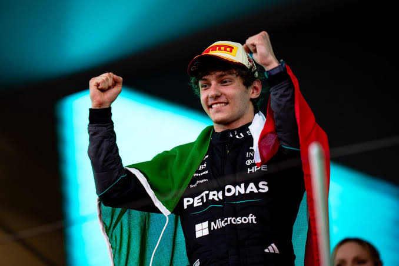
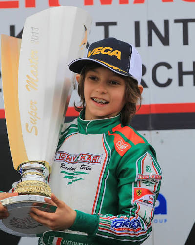
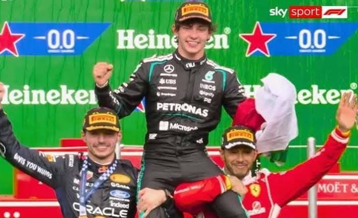
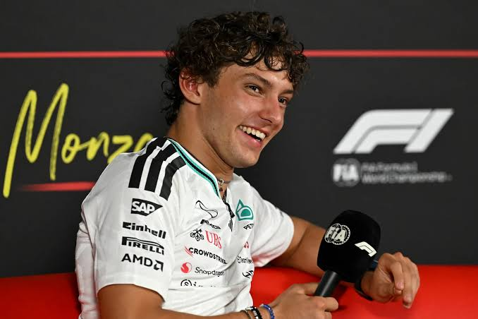

Introducción
Andrea Kimi Antoneli, es un piloto de automovilismo, nacido en Italia, y actual campeon del mundo a sus 20 años en esta temporada de 2026, con la Escuderia Mercedes, siendo el mas joven de la historia.

Biografía
Nacido el 25 de agosto de 2006, en Bolonia Italia, Kimi hizo historia al consagrarse el piloto de formula 1 mas joven de la historia, con 20 años y 68 dias. Hijo del tambien expiloto Marco Antoneli, empezo su carrera como piloto en el karting a los 7 años. se unio a la academia de Mercedez en 2019. Tras convertir varios trofeos en inferirores, Formula 4 y llego a Formula 2 en 2024, debutando en la maxima categoria en 2025, como sucesor de Lewis Hamilton, Arraso la temporada 2026, quedando campeon con 390, a falta de 4 carreras.

Logros
Dentro de sus logros encontramos:
• Campeon Mundial Mas joven
• Piloto más joven en lograr un Grand Chelem
• Campeón mundial (2026).
• Campeón en Europa y Medio Oriente (2023).
• Campeón en Italia y Alemania (2022).
• Bicampeón europeo de la FIA (2020 y 2021).

Datos curiosos
Algunos datos curiosos de Kimi son:
• Al heredar el cuarto de Lewis Hamilton en Mercedes, encontró un mensaje escrito por el británico que decía "Lewis estuvo aquí".
• Sacó su licencia de conducir común apenas seis semanas antes de debutar en la Fórmula 1.
• Los ingenieros de datos de Mercedes le ayudaban a hacer su tarea de matemáticas de la escuela.
• A los 10 años manejó en pista sentado en las piernas de su papá porque no alcanzaba los pedales.
• Tiene un molinillo de pimienta como talismán de la suerte junto a su amigo de MotoGP, Marco Bezzecchi.
• Ha contestado llamadas de su mamá en plena entrevista
• Confesó que no se lava los pies en la ducha porque "el agua que cae ya los limpia".
